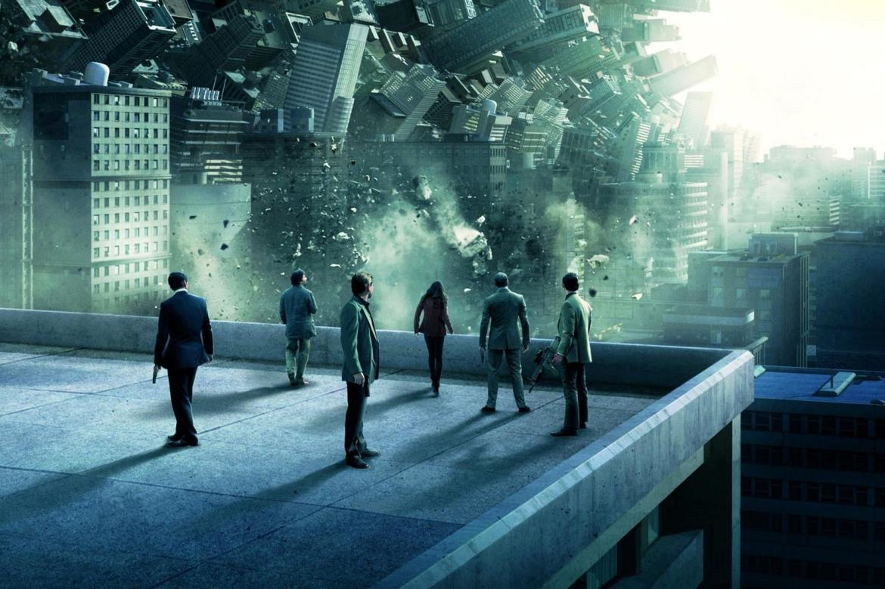

Inception (bra/prt: A Origem) é um filme estadunidense de 2010, dos gêneros ficção científica e ação, escrito, dirigido e produzido por Christopher Nolan. É estrelado por Leonardo DiCaprio, que faz o papel de Dom Cobb, um ladrão especializado em extrair informações do inconsciente dos seus alvos durante o sonho. Incapaz de visitar seus filhos, Cobb tem a chance de vê-los em troca de um último trabalho: fazer a inserção, plantar a origem de uma ideia na mente de um rival de seu cliente.
O desenvolvimento do filme começou em 2001, quando Nolan escreveu um tratamento de 80 páginas sobre ladrões de sonhos, apresentando a ideia para a Warner Bros. A história foi originalmente concebida como um filme de ação, inspirado nos conceitos de sonhos lúcidos e incubação de sonhos.[4] Sentindo que precisava de mais experiência em filmes de grande orçamento,[5] Nolan optou por outros longas e decidiu trabalhar mais seis meses no roteiro de Inception antes que a Warner o comprasse, em fevereiro de 2009.
As filmagens passaram por seis países e quatro continentes, começando em Tóquio, em junho de 2009, e terminando no Canadá, em novembro do mesmo ano. O compositor Hans Zimmer compôs a trilha sonora do filme.
Sinópse

Dom Cobb (Leonardo DiCaprio), juntamente com seu organizador e braço direito Arthur (Joseph Gordon-Levitt), estão em uma missão de invasão da mente do poderoso empresário japonês Saito (Ken Watanabe) usando uma técnica de espionagem industrial através dos sonhos. A dor é sentida nos sonhos, porém a morte leva a pessoa a acordar. Cobb carrega consigo um totem na forma de pião, que originalmente pertencia à sua falecida esposa Mal (Marion Cotillard), para determinar se ele está sonhando ou não. A extração falha devido a intervenção de Mal, cujas lembranças assombram a mente de Cobb e sabotam suas missões. Saito revela que ele estava, na verdade, fazendo um teste para saber se a equipe tinha capacidade de fazer uma inserção, ou seja, usar os sonhos de uma pessoa para implantar a origem de uma ideia. Em troca, ele promete livrar todas as acusações de assassinato contra Cobb, se a missão for bem sucedida, para que ele possa rever seus filhos nos Estados Unidos.
O alvo de Saito é Robert Fischer (Cillian Murphy), filho do inimigo empresarial dele, Maurice Fischer (Pete Postlethwaite). O objetivo é convencer Fischer a dividir o império do pai após a morte dele. Cobb recruta Eames (Tom Hardy), um falsificador capaz de mudar de aparência física dentro dos sonhos, Yusuf (Dileep Rao), um químico que formula sedativos, e Ariadne (Elliot Page), uma estudante que ele e Arthur treinam para criar os cenários dos sonhos. Quando o velho Fischer morre em Sydney, Saito e a equipe dividem um voo com Robert Fischer para Los Angeles a fim de sedá-lo. Com Fischer inconsciente, eles entram no sonho de Yusuf, uma área metropolitana chuvosa, e sequestram Fischer. Entretanto, são atacados pelas projeções treinadas do inconsciente de Fischer, e Saito é ferido gravemente. Devido a influência dos sedativos e as múltiplas camadas de sonhos, a morte leva a pessoa para o limbo, um mundo de sonhos não construídos, por um tempo aparentemente indefinido. Cobb revela a Ariadne que ele passou anos no limbo com Mal, onde eles moldaram um mundo de acordo com suas ideias e que ao acordarem, Mal ficou convencida de que eles ainda estavam sonhando e cometeu suicídio, incriminado Cobb para persuadi-lo a fazer o mesmo, porém, ele fugiu dos EUA e das acusações.
Eames muda sua forma para a de Peter Browning (Tom Berenger), o padrinho de Fischer, para tentar extrair informações de Fischer mas nada consegue. A equipe entra em uma van e são sedados para o sonho de Arthur, um hotel, onde eles convencem Fischer de que ele foi sequestrado no primeiro nível por Browning e que devem entrar na mente dele para determinar seus motivos. Na verdade o sonho é o de Eames, uma área montanhosa e nevada, onde devem invadir uma fortaleza para revelar a ideia plantada. Para acordar e proteger a equipe, um membro fica para trás em cada nível com "chutes" sincronizados: Yusuf dirigindo a van para fora de uma ponte, Arthur explodindo um elevador com os corpos da equipe em gravidade zero, e Eames detonando explosivos na fortaleza da montanha.
Fischer acaba sendo morto por Mal e vai para o limbo. Ariadne e Cobb o seguem para confrontá-la. Lá, Mal tenta convencer Cobb a ficar, fazendo com que ele questione sua própria realidade. Cobb revela que ele plantou uma ideia na mente de Mal para que ela acordasse, fazendo ele indiretamente responsável por sua morte. Ela o ataca, porém Ariadne atira nela. Cobb permanece no limbo para localizar Saito, que havia morrido no nível anterior, enquanto Fischer e Ariadne retornam para a fortaleza, onde Fischer chega à conclusão de que seu pai desejava que ele viesse a ser um homem de convicções próprias. Cobb consegue localizar um envelhecido Saito e lhe diz que ambos precisam retornar à realidade. Ele acorda de volta no avião e encontra todos bem. Saito honra o acordo com Cobb e o livra das acusações de assassinato; Cobb entra nos EUA e finalmente retorna para sua casa. Ele gira o pião para verificar se está sonhando ou não, porém é distraído por seus filhos antes que qualquer resolução possa ser vista, deixando o final aberto a interpretações.
Bilheteria

Inception foi lançado tanto em cinemas convencionais como IMAX no dia 16 de julho de 2010. Teve sua estréia mundial em Londres no dia 8 de julho.[20] Arrecadou US$ 23.7 milhões em seu dia de estréia e US$ 62.7 milhões em seu primeiro fim de semana.[21] Ficou em sua primeira, segunda e terceira semana como número um em bilheteria, até cair para segundo em sua quarta semana, sendo ultrapassado por The Other Guys.
O filme arrecadou US$ 292.576.195 nos EUA e US$ 531.000.000 internacionalmente, para um total de US$ 823.576.195.[1] É o segundo filme de Christopher Nolan em arrecadação, atrás de The Dark Knight; e o segundo de Leonardo DiCaprio, atrás de Titanic. É o quarto filme de maior arrecadação do ano de 2010, atrás de Toy Story 3, Alice in Wonderland e Harry Potter and the Deathly Hallows: Part I.
Crítica
 François Truffaut: Crítico Cinematográfico
François Truffaut: Crítico Cinematográfico
O filme foi aclamado pelas críticas, e chegou a ser comparado com Matrix. Um dos aspectos repetidamente comentado de forma positiva pelos críticos, foi o bom trabalho realizado na edição entre as cenas e a trilha sonora, composta por Hans Zimmer. No site Rotten Tomatoes o filme possui um indíce de aprovação de 86%, baseado em 274, com uma média de 8/10. O consenso do Rotten Tomatoes é "Esperto, inovativo e emocionante; Inception é aquele raro blockbuster de verão que tem sucesso visceralmente e também intelectualmente".[23] No site Metacritic o filme tem uma aprovação de 74/100, baseado em 42 críticas, indicando "críticas geralmente favoráveis".
Pablo Villaça, do site Cinema em Cena, deu ao filme cinco estrelas de cinco, enaltecendo os aspectos técnicos do filme, as atuações, seu roteiro, direção e complexidade; dizendo que o filme permite "múltiplas conclusões" e que a narrativa não se perde em parar "periodicamente para mastigar os acontecimentos"
Fábio Freire, do site Cinema com Rapadura, chegou a dizer, em sua análise, que o filme "é uma mostra da capacidade que o cinema tem de nos manipular por meio de imagens e sons e nos jogar sem pena em uma trama complexa e explosiva".[26] Geo Euzébio, do site "Cineplayers", comparou o filme com Matrix, atribuindo-lhe uma nota 7 (em 10) e afirmando que "apesar da ótima premissa original sobre a expertise na manipulação dos sonhos, o filme se perde justamente na institucionalização de seu elemento narrativo mais forte, que é o procedimentosde inserção e permanência nos chamados sonhos compartilhados". Roberto Cunha, do site "Adoro Cinema", também viu no filme similaridades com Matrix e apontou o mesmo como forte concorrente ao Oscar 2010.